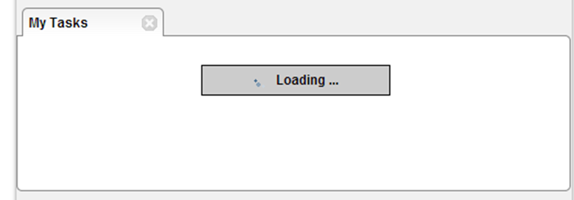

Default behaviour in TACTIC 4.1
Asynchronous loading is a new feature that has been introduced in TACTIC 4.1. Its introduction is the result of a shift in the philosophy of TACTIC user interface design. In this new direction, UIs are expected to be more fluid and responsive.
As of TACTIC 4.1, loading new tabs and links now looks like the picture above. The browser window is still useable during this animation - another link can be clicked in the meantime, for example.
As well, all TACTIC tables load asynchronously: the first 5 rows initially load and the rest of the table is loaded in groups of 10. This allows you to begin working on the table straight away.
Asynchronous Loading in the Custom Layout Editor
As of TACTIC 4.1, the Custom Layout Editor supports asynchronous loading of views. Element tags now support a load attribute, with three options.
| Option | Description |
|---|---|
inline (default) | Load the element with its parent custom layout. |
sequence | Load the element after the parent layout is loaded, in sequence with other elements using this option. |
async | Behave similarly to sequence, but all elements using this option send a request to begin loading as soon as the parent layout is loaded. |
Sequence and async both cause the element to load after the custom layout that contains them loads, allowing a user to begin working before the particular element has loaded.
The difference between sequence and async is only apparent once multiple elements are using these attributes. For example, if a view named my_view has two elements, view1 and view2, which are loaded using the sequence option (as below), my_view would first load, with loading placeholders for view1 and view2. Once view1 loads, view2 would begin loading.
<element load='sequence' view='view1'/> <element load='sequence' view='view2'/>
If instead both elements were using async, two requests would be sent once my_view loads so both elements would begin loading at the same time.
The decision to use async or sequence depends on the scenario. Both allow the parent view to load faster, so their use is recommended. Using async generally decreases the total load time on all elements in a view, but it also causes all the server requests to happen simultaneously.